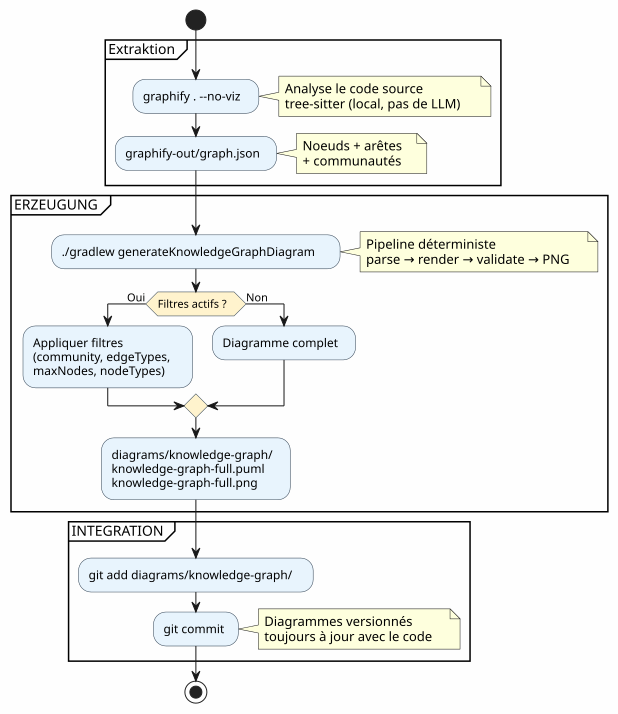
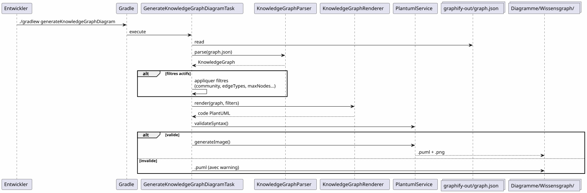

Graphify in einen Gradle-Workflow integrieren: vom Knowledge Graph zum PlantUML-Diagramm in einem Befehl
Publié le 19 April 2026
- Das Problem: Diagramme hinken immer dem Code hinterher
- Die Lösung: ein deterministischer Pipeline Knowledge Graph → PlantUML
- Schritt 1: Graphify installieren und den Knowledge Graph extrahieren
- Schritt 2: Das Gradle-Plugin transformiert den Knowledge Graph in PlantUML
- Schritt 3: Tägliche Nutzung
- Der vollständige Pipeline in einem Gradle-Workflow
- Dogfooding: Das Plugin dokumentiert sich selbst
- Warum es deterministisch ist (und warum das wichtig ist)
- Diagramme des Pipelines selbst
- Integration in die Projektgovernanz
- Vorbereitung : Checkliste in 5 Minuten
- Fallstricke und Gegenmaßnahmen
- Was man am Ende erhält
- Links
Deine Codebasis wächst. Die Abhängigkeiten zwischen Modulen vermehren sich. Die Architektur-Dokumentation wird veraltet, bevor sie überhaupt geschrieben ist. Und was wäre, wenn dein Gradle-Build automatisch aktuelle Diagramme aus der tatsächlichen Code-Struktur generieren könnte? Genau das macht das Graphify + PlantUML Gradle Plugin-Pipeline:`graphify . --no-viz`extrahiert den Knowledge Graph,`./gradlew generateKnowledgeGraphDiagram`Er verwandelt es in PlantUML-Diagramme. Kein LLM, kein Handbuch, 100% deterministisch.
- Tic
-
[]
Das Problem: Diagramme hinken immer dem Code hinterher
Jedes Projekt, das mehrere tausend Zeilen überschreitet, kennt dieses Syndrom:
-
Man zeichnet ein Architekturdiagramm am Anfang des Projekts
-
Der Code entwickelt sich, die Abhängigkeiten ändern sich
-
Das Diagramm wird zu einer dekorativen Lüge.
-
Niemand aktualisiert es, weil es mühsam ist.
-
Die Neuanwärter basieren darauf und machen Fehler.

Die Frage ist nicht müssen wir Diagramme haben? — jeder weiß, dass ja. Die Frage ist:Wer hält sie auf dem neuesten Stand?
Die Antwort: niemand. Ausser wenn es automatisch ist.
Die Lösung: ein deterministischer Pipeline Knowledge Graph → PlantUML
Das Prinzip ist einfach: Statt die Diagramme von Hand zu zeichnen, zeichnet man siegeneriert aus der tatsächlichen Code-Struktur.
Failed to generate image: PlantUML preprocessing failed: [From <input> (line 8) ] @startuml skinparam backgroundColor #FEFEFE skinparam componentStyle rectangle actor Développeur component "Graphify\n(pip install graphifyy)" as Graphify collections "graphify-out/graph.json\n(Knowledge Graph)" as KGJSON component "PlantUML Gradle Plugin ^^^^^ Syntax Error? (Assumed diagram type: component) @startuml skinparam backgroundColor #FEFEFE skinparam componentStyle rectangle actor Développeur component "Graphify\n(pip install graphifyy)" as Graphify collections "graphify-out/graph.json\n(Knowledge Graph)" as KGJSON component "PlantUML Gradle Plugin (generateKnowledgeGraphDiagram)" as Plugin component "WissensgraphenParser" as Parser component "KnowledgeGraphRenderer" as Renderer component "PlantumlService (Validierung + PNG-Rendering)" as PS collections "diagrams/knowledge-graph/\n(.puml + .png)" as Output Développeur --> Graphify : graphify . --no-viz Graphify --> KGJSON : extrait la structure\ndu code source Développeur --> Plugin : ./gradlew generateKnowledgeGraphDiagram Plugin --> Parser : parse(graph.json) Parser --> Plugin : KnowledgeGraph\n(noeuds + arêtes + communautés) Plugin --> Renderer : render(graph, filters) Renderer --> Plugin : code PlantUML\ndéterministe Plugin --> PS : validateSyntax + generateImage PS --> Output : .puml + .png note bottom of Plugin Pipeline DÉTERMINISTE Aucun appel LLM Résultat reproductible end note @enduml
Zwei Befehle. Das ist alles.
# Étape 1 : extraire le Knowledge Graph
graphify . --no-viz
# Étape 2 : générer les diagrammes PlantUML
./gradlew generateKnowledgeGraphDiagramDas Ergebnis? Dateien`.puml` et .png`in`diagrams/knowledge-graph/, versioniert in Git, immer auf dem neuesten Stand des Codes.
Schritt 1: Graphify installieren und den Knowledge Graph extrahieren
Installation
Graphify ist ein Python-Tool, das Ihre Codebase analysiert und einen strukturierten Wissensgraphen erstellt:
# Méthode recommandée
uv tool install graphifyy && graphify install --platform opencode
# Alternative avec pip
pip install graphifyy && graphify install --platform opencodeAusnahmen konfigurieren
Eine Datei erstellen`.graphifyignore`im Wurzelverzeichnis des Projekts, um Dateien auszuschließen, die nicht zur Geschäftslogik gehören:
# Secrets — JAMAIS dans le graphe
*-context.yml
*.env
# Fichiers générés
build/
.gradle/
# Tests fonctionnels
src/functionalTest/Den Knowledge Graph extrahieren
graphify . --no-vizder Flag`--no-viz`überspringt die HTML-Generierung (unnötig in einem Gradle-Pipeline). Das Ergebnis ist eine Datei`graphify-out/graph.json`enthaltend :
-
Knoten: Klassen, Funktionen, Dateien — mit ihrem Typ und Gemeinschaft
-
GrateBeziehungen zwischen Knoten (EXTRACTED aus dem Code, INFERRED vom LLM)
-
Gemeinschaften: automatische Gruppierungen verbundener Knoten
{
"nodes": [
{"id": "0", "label": "LlmService", "file_type": "code", "community": 0},
{"id": "1", "label": "ApiKeyPool", "file_type": "code", "community": 0},
{"id": "2", "label": "PlantumlService", "file_type": "code", "community": 1}
],
"links": [
{"source": "1", "target": "0", "relation": "uses", "confidence": "EXTRACTED", "weight": 0.9},
{"source": "0", "target": "2", "relation": "calls", "confidence": "INFERRED", "weight": 0.7}
]
}|
Der Quellcode ( |
Schritt 2: Das Gradle-Plugin transformiert den Knowledge Graph in PlantUML
Architektur des Pipelines
Das Plugin`com.cheroliv.plantuml`integriert eine Aufgabe`generateKnowledgeGraphDiagram`der transformiert`graph.json`in PlantUML-Diagrammen auf welche Weisevollständig deterministisch:
Failed to generate image: PlantUML preprocessing failed: [From <input> (line 10) ]
@startuml
skinparam backgroundColor #FEFEFE
participant "Gradle" as G
participant "GenerateKnowledgeGraphDiagramTask" as Task
participant "KnowledgeGraphParser" as Parser
participant "KnowledgeGraphRenderer" as Renderer
participant "PlantumlService" as PS
collections "import sys
^^^^^
Syntax Error? (Assumed diagram type: sequence)
@startuml
skinparam backgroundColor #FEFEFE
participant "Gradle" as G
participant "GenerateKnowledgeGraphDiagramTask" as Task
participant "KnowledgeGraphParser" as Parser
participant "KnowledgeGraphRenderer" as Renderer
participant "PlantumlService" as PS
collections "import sys
sys.stdout.write(sys.stdin.read())" as JSON
G -> Task : execute
Task -> JSON : read
Task -> Parser : parse(graph.json)
Parser --> Task : KnowledgeGraph\n(noeuds + arêtes + communautés)
Task -> Renderer : render(graph, filters)
Renderer --> Task : code PlantUML\n(déterministe)
Task -> PS : validateSyntax(plantumlCode)
alt syntaxe valide
Task -> PS : generateImage → .png
else syntaxe invalide
Task -> Task : save .puml avec warning
end
@enduml
Die internen Komponenten
| Komponente | Rolle |
|---|---|
|
parsen`graph.json`— unterstützt 3 Formate: nativer Graphify ( |
|
Transformiert deterministisch ein`KnowledgeGraph`im PlantUML-Code. Gruppen nach Typ, Gemeinschaften in Paketen, automatische Legende. |
|
Gradle-Task, die orchestriert: parse → render → validate → PNG. Konfigurierbar über Gradle-Eigenschaften. |
|
Datenmodelle :`KnowledgeGraph`, |
|
Syntaxprüfung + PNG-Rendering (wiederverwendet von allen Aufgaben des Plugins). |
Renderregeln
Der Renderer wendet deterministische visuelle Konventionen an:
| Kantentyp | PlantUML-Notation | Bedeutung |
|---|---|---|
EXTRACTED |
|
Aus dem Quellcode extrahierte Beziehung (Sicherheit) |
geschlossen |
|
Vom LLM abgeleitete Beziehung (Vertrauensscore) |
mehrdeutig |
|
Ambigue Beziehung (zu überprüfen) |
Die Communities werden als PlantUML-Pakete mit einer automatischen Farbpalette dargestellt.
Schritt 3: Tägliche Nutzung
Vollständiges Diagramm
# Générer le diagramme du Knowledge Graph complet
./gradlew generateKnowledgeGraphDiagramAusgabe:`diagrams/knowledge-graph/knowledge-graph-full.puml`+.png
Nach Gemeinschaft filtern
# Une seule communauté
./gradlew generateKnowledgeGraphDiagram \
-Pplantuml.kg.community=community_0
# Limiter le nombre de noeuds (lisibilité)
./gradlew generateKnowledgeGraphDiagram \
-Pplantuml.kg.community=community_0 \
-Pplantuml.kg.maxNodes=15Nach Kantenart filtern
# Uniquement les relations certaines (EXTRACTED)
./gradlew generateKnowledgeGraphDiagram \
-Pplantuml.kg.edgeTypes=EXTRACTED
# Relations certaines + inférées
./gradlew generateKnowledgeGraphDiagram \
-Pplantuml.kg.edgeTypes=EXTRACTED,INFERREDNach Knotentyp und Vertrauen filtern
# Uniquement les classes de code
./gradlew generateKnowledgeGraphDiagram \
-Pplantuml.kg.nodeTypes=code
# Seuil de confiance minimum (pour les INFERRED)
./gradlew generateKnowledgeGraphDiagram \
-Pplantuml.kg.minConfidence=0.7Benutzerdefiniertes Ausgabeverzeichnis
./gradlew generateKnowledgeGraphDiagram \
-Pplantuml.kg.outputDir=docs/architectureVollständige Referenz der Eigenschaften
| Eigenschaft | Standard | Beschreibung |
|---|---|---|
|
(alle) |
Gemeinden nach Name filtern (Teilzeichenkette) |
|
(alle) |
Kantentypen durch Kommata getrennt:`EXTRACTED`, |
|
|
Mindestvertrauensschwelle für die Kanten |
|
(unbegrenzt) |
Maximale Anzahl der anzuzeigenden Knoten |
|
(alle) |
Knotentypen durch Kommata getrennt (z.B. |
|
|
Ausgabeverzeichnis für die Dateien`.puml` et |
Der vollständige Pipeline in einem Gradle-Workflow
Workflow-Typ

Integration in den Entwicklungszyklus
Die Pipeline integriert sich natürlich in die Schlüsselphasen der Entwicklung:
Failed to generate image: PlantUML preprocessing failed: [From <input> (line 6) ] @startuml skinparam backgroundColor #FEFEFE state "Entwicklung" as dev state "Extraction\ngraphify . --no-viz" as extract state "Generierung ^^^^^ Syntax Error? (Assumed diagram type: state) @startuml skinparam backgroundColor #FEFEFE state "Entwicklung" as dev state "Extraction\ngraphify . --no-viz" as extract state "Generierung ./gradlew generateKnowledgeGraphDiagram" as generate state "Commit versionierte Diagramme" as commit [*] --> dev dev --> extract : Code modifié extract --> generate : graph.json à jour generate --> commit : .puml + .png générés commit --> dev : Diagrammes dans le repo note right of extract Quasi instantané sur du code Kotlin (tree-sitter, pas de LLM) end note note right of generate Déterministe Pas de LLM Résultat reproductible end note @enduml
inkrementelles Update
Wenn der Code sich ändert, bauen wir nicht das gesamte Diagramm von Grund auf neu:
# Mise à jour incrémentale (fichiers modifiés uniquement)
graphify . --update
# Puis régénérer les diagrammes
./gradlew generateKnowledgeGraphDiagram|
|
Dogfooding: Das Plugin dokumentiert sich selbst
Der PlantUML-Plugin existiert, um Prompts in Diagramme zu verwandeln. Er kann auch den Knowledge Graph seiner eigenen codebase in Dokumentationsdiagramme verwandeln. Das ist dogfooding: Der Plugin verbraucht seinen eigenen Dienst.
Failed to generate image: PlantUML preprocessing failed: [From <input> (line 16) ]
@startuml
skinparam backgroundColor #FEFEFE
skinparam componentStyle rectangle
package "Normale Pipeline\n(Benutzer → Diagramme)" as normal {
[Fichier .prompt] as prompt
[LlmService\n+ ApiKeyPool] as llm1
[ProcessPlantumlPromptsTask] as task1
[Diagramme PNG] as out1
prompt --> task1
task1 --> llm1
llm1 --> out1
}
package "Pipeline Knowledge Graph
^^^^^
Syntax Error? (Assumed diagram type: component)
@startuml
skinparam backgroundColor #FEFEFE
skinparam componentStyle rectangle
package "Normale Pipeline\n(Benutzer → Diagramme)" as normal {
[Fichier .prompt] as prompt
[LlmService\n+ ApiKeyPool] as llm1
[ProcessPlantumlPromptsTask] as task1
[Diagramme PNG] as out1
prompt --> task1
task1 --> llm1
llm1 --> out1
}
package "Pipeline Knowledge Graph
(deterministischer Ansatz, kein LLM)" as kg {
[graphify-out/graph.json] as kgjson
[KnowledgeGraphParser] as parser
[KnowledgeGraphRenderer] as renderer
[PlantumlService] as ps
[Diagramme PNG\n(documentation du plugin)] as out2
kgjson --> parser
parser --> renderer
renderer --> ps
ps --> out2
}
package "Pipeline Dogfooding\n(LLM → Dokumentation des Plugins)" as dogfood {
[GraphifyPromptAdapter] as gpa
[Fichiers .prompt\nauto-générés] as auto_prompt
[LlmService\n+ ApiKeyPool] as llm2
[ProcessPlantumlPromptsTask] as task2
[Diagramme PNG\n(documentation LLM)] as out3
kgjson --> gpa
gpa --> auto_prompt
auto_prompt --> task2
task2 --> llm2
llm2 --> out3
}
note "Gleiches LlmService, gleiches ApiKeyPool,
gleiches PlantumlService
— NULL Duplizierung" as N
@enduml
Verknüpfte Gradle-Aufgaben :
| Aufgabe | LLM ? | Beschreibung |
|---|---|---|
|
Nein |
Transforme`graph.json`in PlantUML (deterministisch) |
|
Ja |
Erzeuge einige`.prompt`von dem Graphen, behandelt sie sie via LLM (dogfooding) |
# Documentation déterministe (rapide, pas de LLM)
./gradlew generateKnowledgeGraphDiagram
# Documentation LLM (plus riche, consomme des tokens)
./gradlew generateDiagramDocsWarum es deterministisch ist (und warum das wichtig ist)
Der Schlüsselpunkt des Pipelines`generateKnowledgeGraphDiagram`(Because the source text is empty, the translation is also empty.)Er ruft kein LLM auf.. Die Transformation`graph.json`→ PlantUML ist eine reine Funktion.
Failed to generate image: PlantUML preprocessing failed: [From <input> (line 6) ]
@startuml
skinparam backgroundColor #FEFEFE
skinparam componentStyle rectangle
rectangle "Pipeline DETERMINISTISCH
(generateKnowledgeGraphDiagram)" as det {
^^^^^
Syntax Error? (Assumed diagram type: activity)
@startuml
skinparam backgroundColor #FEFEFE
skinparam componentStyle rectangle
rectangle "Pipeline DETERMINISTISCH
(generateKnowledgeGraphDiagram)" as det {
[graph.json] as json
[KnowledgeGraphParser] as parser
[KnowledgeGraphRenderer] as renderer
[PlantUML code] as puml
json --> parser : parse
parser --> renderer : KnowledgeGraph
renderer --> puml : render (fonction pure)
}
rectangle "Pipeline LLM
(processPlantumlPrompts)" as llm {
[.prompt] as prompt
[LlmService] as llmSvc
[ChatModel] as model
[PlantUML code] as puml2
prompt --> llmSvc
llmSvc --> model : API call
model --> puml2 : réponse non-déterministe
}
note bottom of det
Même entrée → même sortie
Pas de latence réseau
Pas de coût en tokens
Reproductible en CI
end note
note bottom of llm
Même entrée → sortie variable
Latence réseau (1-5s)
Coût en tokens
Nécessite une clave API
end note
@enduml
Die konkreten Vorteile:
| Vorteil | Impact |
|---|---|
Reproduzierbarkeit |
gleich`graph.json`→ gleiche Abbildung. Genau. Jedes Mal. |
Null Kosten |
Kein LLM-Aufruf = keine Tokens = keine API-Rechnung. |
Null Latenz |
Parse + render dauert ~100ms, nicht 1-5 Sekunden. |
CI-kompatibel |
Es ist kein API-Schlüssel erforderlich. Kein flaky Test aufgrund einer variablen LLM-Antwort. |
Versionierbar |
Le |
Diagramme des Pipelines selbst
Um den Kreis zu schließen, hier ist das Diagramm des Pipelines, wie es vom Plugin generiert würde :

Integration in die Projektgovernanz
In unserem Projekt integriert sich diese Pipeline in eine EAGER/LAZY-Kontextverwaltungsstrategie für den KI-Agenten. Der Knowledge Graph ersetzt die manuelle Architektur-Dokumentation durch einen strukturierten, abfragbaren und selbst aktualisierenden Graphen.
Failed to generate image: PlantUML preprocessing failed: [From <input> (line 11) ]
@startuml
skinparam backgroundColor #FEFEFE
skinparam componentStyle rectangle
package "EAGER\n(immer geladen)" as eager {
[PROMPT_REPRISE.adoc\n(contexte session)] as pr
[INDEX.adoc\n(vue d'ensemble)] as idx
[GRAPH_REPORT.adoc\n(~50 lignes)] as gr
}
package "LAZY — Strategie
^^^^^
Syntax Error? (Assumed diagram type: component)
@startuml
skinparam backgroundColor #FEFEFE
skinparam componentStyle rectangle
package "EAGER\n(immer geladen)" as eager {
[PROMPT_REPRISE.adoc\n(contexte session)] as pr
[INDEX.adoc\n(vue d'ensemble)] as idx
[GRAPH_REPORT.adoc\n(~50 lignes)] as gr
}
package "LAZY — Strategie
(auf Anfrage)" as lazy_strat {
[Méthodologies] as meth
[Archives sessions] as sessions
}
package "LAZY — Graphify\n(zielgerichtete Anfragen)" as lazy_graph {
[graph.json] as gj
[Queries\n(query/path/explain)] as queries
}
package "Pipeline PlantUML
(automatisch generiert)" as puml {
[generateKnowledgeGraphDiagram] as kgTask
[generateDiagramDocs] as ddTask
[Diagrammes PNG] as diagrams
}
Agent --> eager : Lit en début de session
Agent ..> lazy_strat : Charge si type détecté
Agent ..> lazy_graph : Query si besoin structurel
kgTask --> diagrams : Déterministe
ddTask --> diagrams : Via LLM
note right of gr
Condensé du Knowledge Graph
God nodes + communautés
Remplace ECOSYSTEM_OVERVIEW
(225 lignes → 50 lignes)
end note
@enduml
Die Kombination beider Systeme ist komplementär :
-
Die Strategie regelt das WANN und das WIE— Governance, Workflow, Archivierung
-
Graphify verwaltet das WAS und das WO— Struktur des Codes, Beziehungen, gezielte Abfragen
_ Die Sitzungsstrategie verwaltet daswann et le wie(Governance, Workflow, Schwellen), Graphify verwaltet dasWAS et le WO(Struktur des Codes, Beziehungen, gezielte Anfragen). Die Pipeline PlantUML verwaltet dasMit was(deterministische Diagramme, versioniert, stets aktuell). _
Vorbereitung : Checkliste in 5 Minuten
| # | Schritt | Bestellung |
|---|---|---|
1 |
Graphify installieren |
|
2 |
Ausnahmen konfigurieren |
Erstellen`.graphifyignore` |
3 |
Knowledge Graph extrahieren |
|
4 |
Die Diagramme generieren |
|
5 |
Committe die Ergebnisse |
|
# Script complet en 5 commandes
uv tool install graphifyy
cat > .graphifyignore << 'EOF'
*-context.yml
*.env
build/
.gradle/
EOF
graphify . --no-viz
./gradlew generateKnowledgeGraphDiagram
git add graphify-out/GRAPH_REPORT.adoc graphify-out/graph.json diagrams/knowledge-graph/Fallstricke und Gegenmaßnahmen
| Falle | Beschreibung | Minderung |
|---|---|---|
zu dichter Graph |
Ein großes Projekt erzeugt Hunderte unlesbare Knoten |
verwenden`-Pplantuml.kg.maxNodes=30`und nach Community filtern |
Zu weite Ausschlüsse |
Zu viele Dateien in`.graphifyignore`verringert den Wert des Graphen |
Beginnen Sie damit, nur credentials und build zu ausschließen |
Richtung der Pfeile |
Die INFERRED-Kanten können eine mehrdeutige Richtung haben |
Filtern nach`-Pplantuml.kg.edgeTypes=EXTRACTED`nur für bestimmte Beziehungen |
veralteter Graph |
Der Code ändert sich, aber der Graph wird nicht rekonstruiert |
Verwenden`graphify . --update`regelmäßig oder der Git-Hook`graphify hook install` |
Aktualisierte Kosten |
Inkrementelle Updates sind quasi kostenlos (tree-sitter lokal) |
Nur die docs ( |
Was man am Ende erhält
Failed to generate image: PlantUML preprocessing failed: [From <input> (line 10) ]
@startuml
skinparam backgroundColor #FEFEFE
rectangle "VORHER" as avant {
card "Handgezeichnete Diagramme\nImmer veraltet\nNiemand aktualisiert sie" as av1 #FDEDEC
}
rectangle "nach" as apres {
card "Automatisch generierte Diagramme
Immer auf dem neuesten Stand mit dem Code
^^^^^
Syntax Error? (Assumed diagram type: activity)
@startuml
skinparam backgroundColor #FEFEFE
rectangle "VORHER" as avant {
card "Handgezeichnete Diagramme\nImmer veraltet\nNiemand aktualisiert sie" as av1 #FDEDEC
}
rectangle "nach" as apres {
card "Automatisch generierte Diagramme
Immer auf dem neuesten Stand mit dem Code
In Git versioniert
Deterministisch und reproduzierbar" as ap1 #E8F8E8
}
avant --> apres : graphify . --no-viz\n+ ./gradlew generateKnowledgeGraphDiagram
@enduml
Die konkreten Vorteile
| Vorteil | Detail |
|---|---|
Immer aktuelle Dokumentation |
Die Diagramme spiegeln den aktuellen Code, keinen manuellen Snapshot |
Kein Wartungsaufwand |
Die Diagramme regenerieren sich bei jedem Build |
Reduzierung der technischen Schulden |
Es ist nicht mehr nötig, die Diagramme manuell zu pflegen. |
Visueller Kontext für die neuen |
Ein neuer Entwickler versteht die Architektur, indem er die Diagramme betrachtet. |
Feintuning-Potential |
Die Paare (Untergraph → Diagramm) sind Beispiele für KI-Training |
Automatische Validierung |
`PlantumlService.validateSyntax()`Überprüft jedes generierte Diagramm |
schnelles Onboarding |
5 Diagramme = vollständige Ansicht der Architektur |
_ Wer ein Warum hat, kann alle Wie ertragen. _
Das warum : Diagramme stets auf dem neuesten Stand. Das wie : zwei Befehle in einer Gradle-Pipeline.
Links
-
Die Super-Tipps des fg-Befehls— vorheriger Artikel über den Terminal-Workflow